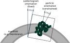

The particle set (typically named particles.star) lists all the particles in a data set. It is roughly equivalent to the corresponding particles file used by the SPA programs in Relion, and it serves as the binding element between the tomography programs and the ones used for the general refinement. It is also the only tomography data file that can be understood by the SPA programs in Relion.
Like an SPA particle set, the tomography particle set consists of an optics table and a particle table. Unlike in an SPA particle set, the coordinates of the particles are given in 3 dimensions (rlnCoordinate<X/Y/Z> and rlnOrigin<X/Y/Z>Angst), and each particle also requires a tomogram name (rlnTomoName) that identifies the particle's tomogram of origin, as defined in the tomogram set.
Also unlike in SPA, the tomography particles should not be thought of as pixel data stored on disk, but instead as abstract entities defined in this file. The 3D images that are used for refinement can be created using the program relion_tomo_subtomo, but they should be regarded as transient data that become invalid once any of the other properties of their tomograms have been updated. Therefore, during the processing of a tomography data set, those 3D images are typically created multiple times.
Another difference to a 2D particle set is that tomography particles can optionally posess two different orientations. In tomography, the approximate orientation of a particle is often dictated by the geometric context (e.g. the orientation of a membrane in which they are embedded). Therefore, the subtomogram alignment can be greatly accelerated by defining the initial orientation of each subtomogram in relation to that geometry (using the fields rlnTomoSubtomogram<Rot/Tilt/Psi>) and then applying strong priors during refinement to constrain the angles that describe the orientation of the particle itself with respect to its subtomogram (rlnAngle<Rot/Tilt/Psi>). Since only the latter angles are considered by relion_refine, the priors will only affect those angles. Typically, this means that the rlnAngleTilt angle will be constrained, while the other two are usually unknown, even in tomography.

There are currently two ways in which a new particle set can be created: it can be either imported from an existing data set, or the particles can be sampled along a set of user-defined (and possibly fitted) manifolds using the program relion_tomo_sample_manifold. In the latter case, the program will automatically define the subtomogram orientations in relation to the manifold, such that the Z axis of the (yet to be created) subtomograms will point perpendicularly to the manifold. A more detailed description on how to import particles from existing data sets is provided in importing particles.